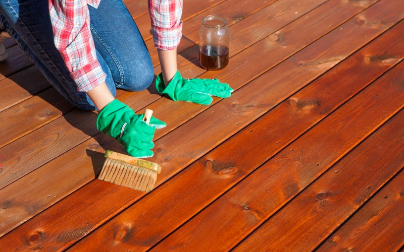

Posted on June 4, 2023
Summer is here, and there's nothing quite like enjoying the warm Seattle weather on a beautiful deck. But what happens when your deck is damaged, and the fun is cut short? Don't let deck damage ruin your summer fun! Whether it's from wear and tear over time, weather damage, or neglect, repairing your deck is essential to keeping your outdoor space safe and enjoyable. As a homeowner in Seattle, you know all too well the harsh weather conditions that your deck must endure. From heavy rain to extreme temperatures, your deck needs proper care and maintenance to remain in good condition. In this article, we'll explore how to repair your Seattle deck to get it ready for the summer season. So, grab your tools, put on your work gloves, and let's get started!
Common Causes of Deck Damage in Seattle
Seattle's climate can be tough on decks. With plenty of rainfall, a damp climate, and harsh winter weather, it's no wonder that decks can suffer from damage over time. One of the most common causes of deck damage is moisture. When water seeps into the wood of your deck, it can cause rot, warping, and other problems. In addition, the sun's UV rays can fade and damage your deck's color and finish over time. Finally, heavy foot traffic, pets, and furniture can also cause wear and tear on your deck.
Signs of Deck Damage
Before you begin repairing your deck, it's important to know what to look for. Some common signs of deck damage include:
- Warped or uneven boards
- Cracks or splintering
- Soft or spongy areas
- Loose or missing screws or nails
- Fading or discoloration
If you notice any of these signs, it's time to take action and repair your deck.
Steps to Repair Deck Damage
Repairing deck damage can be a time-consuming process, but it's worth it to keep your deck safe and enjoyable. Here are the steps you'll need to take to repair your Seattle deck:
Tools and Materials Needed for Deck Repair
Before you begin repairing your deck, you'll need to gather the necessary tools and materials. Here's what you'll need:
- Safety glasses and work gloves
- Circular saw or jigsaw
- Power drill
- Deck screws or nails
- Replacement deck boards
- Wood filler
- Sandpaper
- Deck stain or sealer
Deck Cleaning and Preparation
The first step in repairing your deck is to clean and prepare the surface. Begin by removing any furniture, plants, or other items from the deck. Then, sweep the deck to remove any dirt or debris. Use a power washer or hose to rinse the deck thoroughly. Allow the deck to dry completely before moving on to the next step.
Replacing Damaged Deck Boards
If you have any damaged deck boards, it's important to replace them before they cause further damage. Use a circular saw or jigsaw to remove the damaged board. Measure the length of the board and cut a replacement board to size. Attach the new board using deck screws or nails. If the replacement board is slightly smaller than the original, use wood filler to fill in any gaps.
Strengthening Deck Support Posts and Beams
Over time, the support posts and beams on your deck can weaken and become damaged. To strengthen them, use a power drill to attach metal brackets to each post and beam. These brackets will help to reinforce the structure of your deck and prevent future damage.
Staining and Sealing Your Deck
Once you've repaired any damage to your deck, it's important to protect it from future damage. Use a deck stain or sealer to protect your deck from moisture, UV rays, and other environmental factors. Apply the stain or sealer according to the manufacturer's instructions, and allow it to dry completely before using your deck.
Regular Deck Maintenance Tips
Preventing deck damage is easier than repairing it. Here are a few tips to help you keep your Seattle deck in good condition:
- Sweep your deck regularly to remove dirt and debris.
- Trim any plants or trees that are growing too close to your deck.
- Move furniture and other items around periodically to prevent wear and tear in one area.
- Use a grill mat to protect your deck from heat and grease.
- Apply a deck stain or sealer every few years to protect your deck from moisture and UV rays.
Conclusion
Your deck is an important part of your outdoor living space, and it's essential to keep it in good condition. Whether you're dealing with rot, warping, or other damage, repairing your deck can help to keep it safe and enjoyable for years to come. By following the steps outlined in this article, you'll be able to repair your Seattle deck and get it ready for summer fun. If you're looking for help with deck repairs and maintenance, contact Seattle Outdoor Services, to get a free estimate for your project.